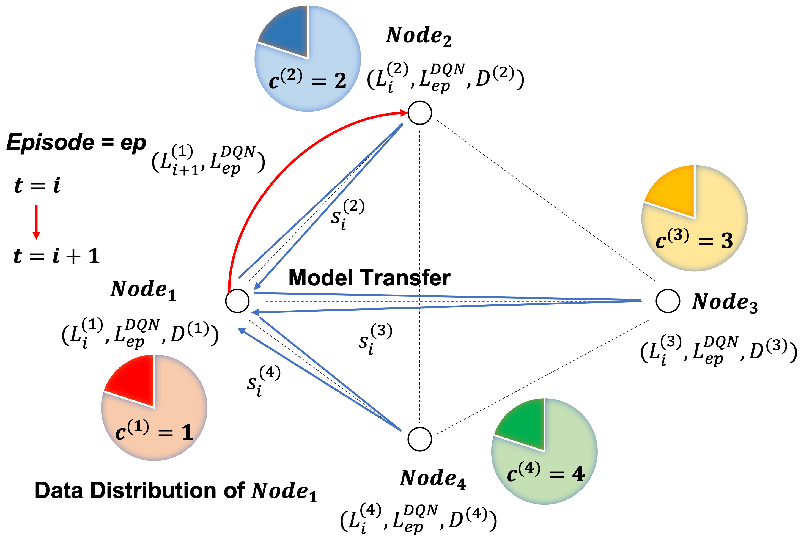

Yuwei Sun
Email: ywsun [at] g.ecc.u-tokyo.ac.jp |
 |
Yuwei Sun
Email: ywsun [at] g.ecc.u-tokyo.ac.jp |
|
| News |
Oct 2021: Happy to be selected as a fellow of the SPRING GX Program at the Japan Science and Technology Agency (JST).
Sep 2021: Happy to be selected as a Doctoral Course Research Fellow at the Japan Society for the Promotion of Science (JSPS) to conduct research on Privacy-Preserving ML for IoT.
May 2021: Happy to serve as a consultant at the United Nations University Centre located in Tokyo for the "AI for Security" project.
Apr 2021: Happy to join the AI Security and Privacy team as a research associate at the RIKEN Center for Advanced Intelligence Project (AIP)
Apr 2021: I start my Ph.D. program at the University of Tokyo.
Mar 2021: I graduate from the University of Tokyo with a Master degree in Information and Communication Engineering and receive the honor of Department Chair's Award for Outstanding Thesis.
Oct 2020: Happy to receive the scholarship from the Heiwa Nakajima Foundation.
May 2020: Glad to complete my ASP fellowship at Massachusetts Institute of Technology (MIT).
| Research Interests |
| Biography |
| Publications |
|
Semi-Targeted Model Poisoning Attack on Federated Learning via Backward Error Analysis
Accepted at IJCNN 2022. PDF | BibTex |

|
Multi-Source Domain Adaptation Based on Federated Knowledge Alignment
arXiv preprint. 2022. PDF | BibTex | Code |
|  |
Homogeneous Learning: Self-Attention Decentralized Deep Learning
IEEE Access. 2022. PDF | BibTex | Code |

|
Decentralized Deep Learning for Multi-Access Edge Computing: A Survey on Communication Efficiency and Trustworthiness
IEEE Transactions on Artificial Intelligence. 2022. PDF | BibTex |

|
Adaptive Intrusion Detection in the Networking of Large-Scale LANs with Segmented Federated Learning
IEEE Open Journal of the Communications Society, Vol.2, pp.102-112. 2020 PDF | BibTex | Video | Code |
|
Information Stealing in Federated Learning Systems Based on Generative Adversarial Networks
IEEE SMC 2021 PDF | BibTex |
|
Intrusion Measurement and Detection in LAN Using Protocol-Wise Associative Memory
IEEE ICAIIC 2021 PDF | BibTex | Video |
|
Deep Learning-Based Anomaly Detection in LAN from Raw Network Traffic Measurement
IEEE CISS 2021 PDF | BibTex |

|
Network Flows-Based Malware Detection Using a Combined Approach of Crawling and Deep Learning
IEEE ICC 2021 PDF | BibTex | Video |

|
Blockchain-Based Federated Learning Against End-Point Adversarial Data Corruption
IEEE ICMLA 2020 PDF | BibTex | Video |
|
Trajectory Optimization for an Autonomous Vehicle Driving Across Stochastic Traffic Flows Based on Direct Collocation
IEEE ICCAD 2020 PDF | BibTex | Video |

|
Intrusion Detection with Segmented Federated Learning for Large-Scale Multiple LANs
IEEE IJCNN 2020 PDF | BibTex | Video | Code |
|
Text-Based Malicious Domain Names Detection Based on Variational Autoencoder and Supervised Learning
IEEE CISS 2020 PDF | BibTex |
|
Aircraft Detection Based on Saliency Map and Convolution Neural Networks
IEEE ICSEC 2019 PDF | BibTex |
| Invited Talks |
| Academic Service |
| Awards and Honors |